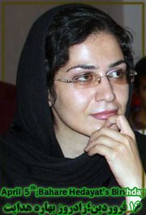

|
|
|
Browsing
Contact Us |
Campaigners |
Face to Face |
Tribune |
Interview |
News |
On the Web |
One Million |
Report
Farsi | Français | German | Italian | Spanish | العربية Also in this section
|
 Bahareh Hedayat, Iranian Women’s Right Activist, “A Woman of Thirty” in PrisonBy Elahe Amani Wednesday 6 April 2011 Change for Equality: The 1932 work of French novelist Balzac, “A Woman of Thirty” (Une Femme de Trente Ans), is the story of a spirited woman during the 19th century. In “A Woman of Thirty,” Eugenie is the finest Balzac female character, radiant in generosity of her love. The story clung to my memory after first reading it at the age of seventeen. Eugenie perseveres amidst her own 19th century European society of pain and of limits on her aspirations. One of the lines of the story that has remained vividly in my mind was when Eugenie told Monsieur le President, “ I know what pleases you in me. Swear to leave me free during my whole life, to claim none of the rights which marriage will you over me, and my hand is yours.” Fast forward a couple centuries in history and the stories of the spirited women of thirty in the 21st century also cling to my memory. From Iran to Egypt, from Pakistan to the United States, Eugenies abound, particularly in the global south –rewriting the stories of their lives, the stories of “Women of Thirty”, with resilience, bravery, and passion. Bahareh Hedayat, a younger Iranian woman’s rights and student activist is one of the spirited “Women of Thirty”. She will celebrate her 30th birthday and wedding anniversary on April 5th, in Tehran’s notorious Evin prison. To commemorate Bahareh’s 30th Birthday, a group of Iranian women and student activists launched a global campaign to Free Bahareh Hedayat. Like the millions of younger women and men of her generation, Bahareh desires rights, dignity, prosperity, family, and love. Why does she have to celebrate her 30th birthday in the Evin prison? What is the crime that she has committed that warrants her spending her 30s, the best years of her life, in solitary confinement? Why she is denied the basic and simple human rights of celebrating her birthday and wedding anniversary with her beloved husband on April 5th? She is in prison because she dared to exercise her civil rights and demand what belongs to her. But, in a country where the rights to freedom, liberty and equality are violated daily; in a country where over the last month (February 21-March 21st) human rights defenders documented more than 13,000 incidences of violation of human rights of women, workers, ethnic minorities, religious minorities, students etc; in a country that has the highest per capita of death penalty and the second highest number of executions after China; in a country that demanding eradication of discriminatory laws against women and girls considered a threat to national security, Bahareh and other bright and young Iranian men and women, the true asset of our nation, are spending their best years of life in prison because the regime in Tehran cannot tolerate even the most diluted version of freedom and human rights. Who is Bahareh Hedayat? Bahareh Hedayat is a student activist at Tehran University’s School of Economics, an active member of the women’s movement, and of the Campaign for One Million Signature to Change Discriminatory Laws Against Women. I first heard her name in the context of a women‘s gathering on June 12th, which resulted in her arrest. She was also arrested on July 9th 2007, July 13th 2008, March 21st, 2009, and finally on December 31st 2009. On that day, security forces raided her home at 10:00pm, her belongings were confiscated, and she was taken to solitary confinement at Evin Prison. Bahareh has been charged with 16 counts by the prosecutor, and in a rare occurrence, the prosecutor made an effort to visit with her and read those charges personally to her in her prison cell. The charges include propaganda against the regime, active participation in post election demonstrations, interviews with foreign media outlets, insulting the Supreme Leader, insulting the president, and gathering and colluding against the regime. On February 23rd, 2010, Bahareh’s interrogation was finally ended. She was finally transferred from solitary confinement to the general ward at Evin on March 20th, 2010 and on May 5th, 2010 Hedayat’s trial finally took place and the 26th Branch of the Revolutionary Court sentenced her to 9 1/2 years in prison on May 19th, 2010. Charging Bahareh with participation in post election demonstrations reminds me of the statement that Nelson Mandela made in 1962 against the apartheid regime of South Africa. The young Mandela stated: “In its proper meaning equality before the law means the right to participate in the making of the laws by which one is governed, a constitution which guarantees democratic rights to all sections of the population, the right to approach the court for protection or relief in the case of the violation of rights guaranteed in the constitution, and the right to take part in the administration of justice as judges, magistrates, attorneys-general, law advisers and similar positions. In the absence of these safeguards the phrase ’equality before the law’, in so far as it is intended to apply to us, is meaningless and misleading. “ Bahareh and other women in the political prisoners section of Evin often lose their phone privileges and other rights that prisoners of conscience are to which they are entitled. A few months ago, a number of Iranian women prisoners of conscience were transferred to a closed hall referred to as the “Methadone Section” –used for drug-addicted prisoners going through withdrawal symptoms. They only allow 45 minutes of fresh air every day and for the rest of the day they have to remain in the closed hall and are not allowed to participate in activities of the prison while also denied telephones and visits from their family and friends. It is being said that the prisoners even sleeping on the floor due to lack of beds. Some are speculating that the harsh condition in women political prisoners ward is even more deplorable than the situation of male political prisoners. As of March 8th, 2011, there were 72 imprison Iranian women, including female bloggers, journalists, lawyers, woman’s rights activists, student activists, prisoners of conscience, and members of religious and ethnic minorities. Despite the harsh prison situation, Bahareh’s spirit is strong and her courage is mighty. As a student activist, she wrote the following letter on the occasion of Iran’s Student Day, commemorated just a few months ago on December 7, 2010 (16 Azar 1389): “It has not been long since the last goodbye and our passionate battle cry together to overcome the darkness. We intended to strive with a long stride to reach the shores of light and love. We thought, at last, there will be an end to our distress and suffering, and it won’t be long till freedom will be within our people’s reach. With our hearts together, we united and although disadvantaged in an unfair battle, we fought against tyranny with empty hands. Not only in the streets but also in our hearts, we chose to be calm and collected, but also when confronted with cruelty, our sorrows multiplied. Until such a day as flowers blossom far and wide and the breeze of knowledge blows from every town and village, we envisioned our universities full of colorful and scented flower arches, not prison cells. In our dreams, there are no barbed wires or iron gates keeping us from entering our schools. There are no private notices sent to expel students, and the shadow of fear has soared away from our universities. The professors are not banned from teaching, and our schoolmates, no longer resonating full of regret, are not summoned for questioning. My schoolmates, we are worn out but have neither bent nor broken. We continue to stand erect, although with wounded and restless hearts. We bear witness to the efforts of dictators looting a fertile land nurtured by the selfless sacrifices of past and present generations. The injustice imposed on Iran’s universities, our motherland and her children is the last efforts of dark hearted individuals who cannot rest peacefully any longer because the youths in Iran have a vision to free our nation. I wish our sweet dreams were no one’s nightmares. Alas, we are dealing with individuals who utter nothing but falsehoods and wish to mar us with each other’s treachery and revenge. Be forewarned in dealing with this evil to guard your conscience and stay true. Otherwise, you have opened your heart to hatred and have chosen to follow the dark path. My patient brothers and brave sisters, winter has once again brought us the month of Azar (December), a month that was ours to strike at the heart of darkness, a month that will always be ours. The cold, brick walls of Evin prison with its endless days and nights attempt in vain to put distance between you and me, but I still remember all the bygone Student Days we spent together and longed for green, bright sunny days of the future. Although they have erected a wall between us, I am still with my schoolmates, and by their side, hand in hand, we sing the same songs and raise our fists in the air to shout that the love between us may not be tarnished by any obstacles. Sadness and loneliness have no place in my heart because our empathy for each other is untainted. These perpetual, sad and cold days and nights will surely end forever someday so that the hopeful promise of life surrounds us all over. There is no doubt in my mind that in our bright future, we will breathe in a free country while celebrating our liberty together. Reaching for the blue skies, we will greet the sunlight once again in our universities and all over this land that will be free, free, and free at last. Since that day is near, let us reject any doubts we may have. We must believe in this and stand up like before, informed and hopeful. I’m coming, coming, coming I’m coming, coming, coming Bahareh Hedayat “ Bahareh and other younger political prisoners all over the world are passionate souls who strive to live in a safe world, a just world, and a world that embraces equality and dignity for all. But, the reality in Iran, and a number of other countries, is harsh and cruel; it offers no solace, and destroys the dreams and desire of the younger human rights defenders of our world. While in Iran there is zero tolerance for demanding rights and dignity or exercising civil rights and liberty, in other countries including the United States, the human rights, dignity and equality before law faces many challenges. While the official stance in the United State is that it does not have any political prisoners, on March 23rd Michelle Alexander, currently a law professor at Ohio State, and author of the bestseller, The New Jim Crow: Mass Incarceration in the Age of Colorblindness, told a standing room at the Pasadena Main Library: “More African American men are in prison or jail, on probation or parole than were enslaved in 1850, before the Civil War began.” The simple, yet profound fact is that the 2.4 million prisoners in US and thousand of prisoners of conscience in Iran and millions of other younger people all over the world are in detention because they are not of the right skin color, class, religious, or political beliefs. In a world that strives to find heroes and sheroes, Bahareh Hedayat and other younger Iranian woman activists continue to be enduring icons of moral courage and to resemble the conviction of a generation who believes in the beauty of their dreams. Elahe Amani is a Women and Human Rights Activist. She is the Chair of the Global Circles of the Women’s Intercultural Network. |